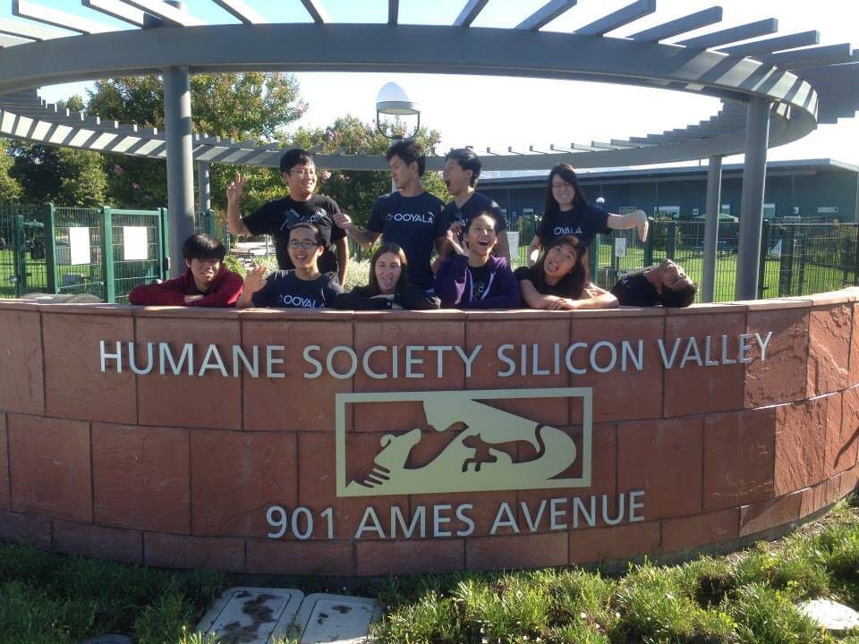

Ooyala Inc.
Summer and Fall 2013

A few of the interns volunteering at the Animal Shelter!
Summary of Work
Disclaimer: Due to the confidential nature of some of the information handled during my internship, I can only share a limited amount of information on my work at Ooyala.
I worked at Ooyala as a Sales Engineer and Business Development intern from June 2013 until November 2013. The project I worked on was designing, creating, and executing a five-day training workshop series for Developers looking to work on engineering projects for Ooyala. The workshop included both an introduction to Ooyala as a company and culture as well as a deep dive into the specifics of the product, processes, and methodology that encompass an Ooyala engineer's work.
I was in charge of creating the material to teach the work that the Ooyala engineers do. To accomplish this, I had 1:1 meetings with numerous engineers from all our global offices in order to unerstand their work for myself. After doing so, I created an order of topics to teach during the training week, created all of the presentation decks per module, created worksheets and workbooks for the trainees to reference, and created exams for the trainees to take at the end of the workshop.
My internship was extended and I worked remotely during my Fall 2013 semester. I helped put together another training workshop for Resellers as well as doing some competitive analysis of our product on the side.
Overall, my time at Ooyala was extremely rewarding. Being able to talk to so many experienced engineers and learning how to break down and synthesize their work and code truly exercised my skills as an engineer. Formulating the chronology of workshops and building the decks exercised my design skills not only artistically through the materials I created, but also organizationally through the architecture of the workshop itself.